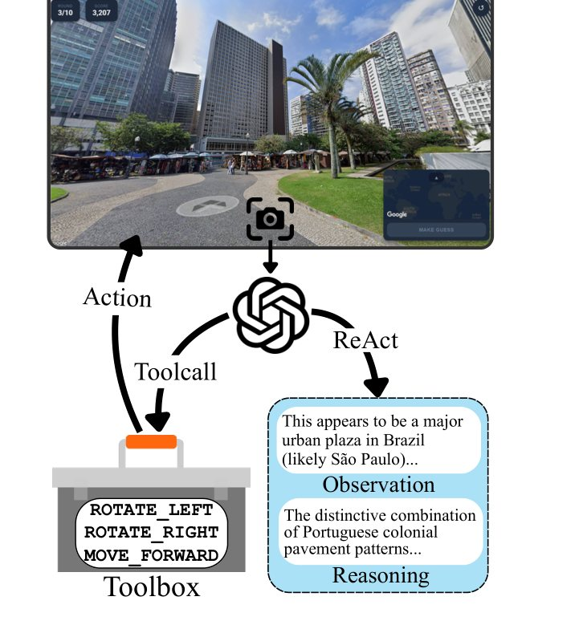
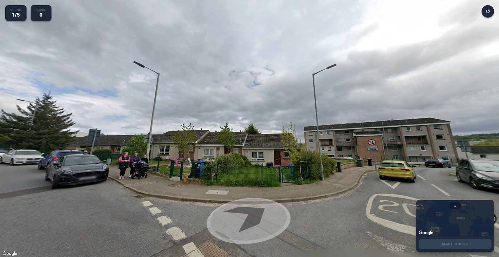
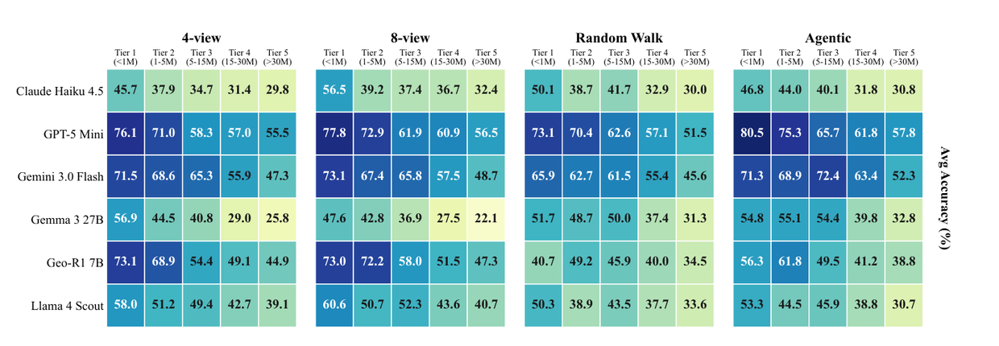
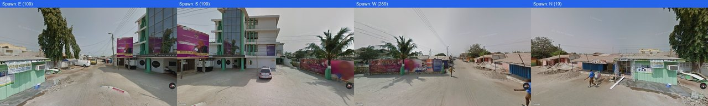
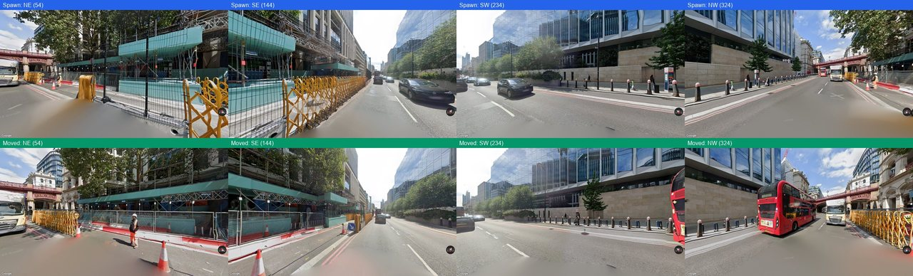
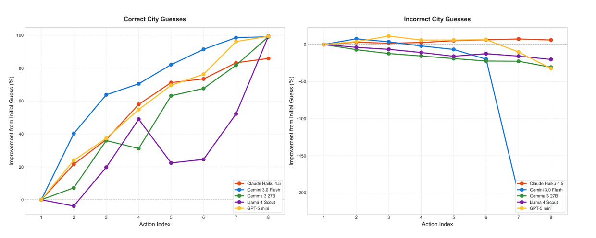
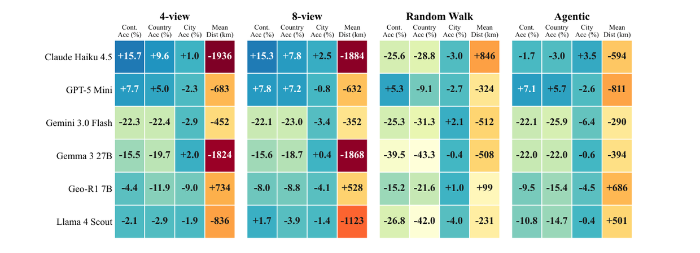
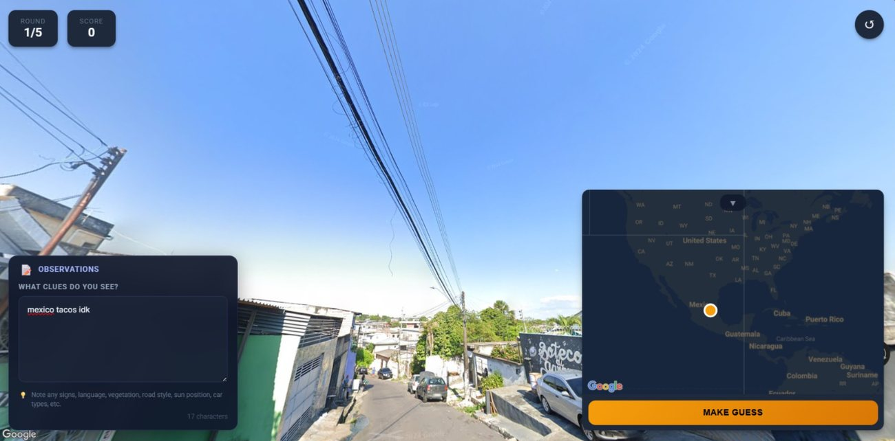

Modern Vision-Language Models (VLMs) perform well above the human baseline in geolocalization tasks. However, most efforts to study AI behavior on the task remain limited to static image-based retrieval, classification, and predictions. We argue that faithful recreation of the task should involve embodied navigation, where a multimodal agent autonomously explores its surroundings to gather observations before submitting a prediction. To this end, we introduce GeoAgent, an agentic environment-based benchmark that requires agents to navigate Street View environments to refine their geolocalization through reasoning sequentially. Our analysis shows that modern VLMs struggle to discern regional patterns while succeeding at country- and continent-level predictions. When compared to static image-based baselines, agentic navigation significantly improves accuracy across established metrics. We also note severe bias in a developed/developing region context across frontier model architectures and poor self-improvement capabilities given incorrect priors. Overall, our work establishes the challenges of embodied navigation and geospatial reasoning.
We introduce GeoAgent, a collection of geolocalization data and an embodied navigation environment, showing significant limitations and insights into LLM-based agentic navigation.
When a person plays GeoGuessr, the opening frame is rarely the useful one. They spin around hunting for a street sign, walk to the junction to read a shopfront, glance down to check which side of the road the traffic keeps. The identifying detail is somewhere in the scene — it just isn’t in the direction the camera happens to be pointing.
Static benchmarks freeze that decision away. A model gets a fixed set of views and must infer from whatever they happen to contain; if the decisive cue lies around the corner, it is unreachable. Even video-based geolocalization keeps the model a passive observer riding somebody else’s camera path. The argument of this work is that such evaluations measure the wrong capability: passive inference tests recognition, whereas the real task is reasoning under uncertainty with the ability to reduce that uncertainty.
GeoAgent restores the missing half. It is both an open environment and a benchmark, built on real Street View panoramas, in which a model interleaves observation, reasoning, and navigation. Three questions organise the study:
The environment is a minimal web interface wrapped around Google Street View. The model never touches a mouse: it emits a tool call, the environment moves the camera, and a fresh screenshot returns. Nine actions are available.
| Action | Description |
|---|---|
| ROTATE:<degrees> | Rotate to a specific heading (0–360°) |
| ROTATE_LEFT | Rotate 90° left from current view |
| ROTATE_RIGHT | Rotate 90° right from current view |
| ROTATE_BEHIND | Rotate 180° to look behind |
| LOOK_UP | Tilt the camera up by 20° |
| LOOK_DOWN | Tilt the camera down by 20° |
| MOVE_FORWARD | Move forward along the road or path |
| RETURN_START | Return to the starting position |
| GUESS | Submit the final location guess |


Each turn the model returns the same five JSON fields — observations, reasoning, confidence, action, and a current guess — carrying up to five prior observations as context. It is a ReAct-style loop: look, think, move.
One design choice matters more than it appears. The model never emits coordinates. It names a place, and the environment resolves that name to latitude and longitude through the Google Geocoding API. This removes an entire failure mode in which a model identifies the right city and then hallucinates wrong numbers for it.
Exploration is capped at eight actions. That cap is a finding rather than a convenience, and §5 returns to it.
A benchmark built from famous landmarks measures how much of the internet a model absorbed. GeoAgent is weighted deliberately against that. 100 cities were selected and stratified into five recognisability tiers by annual visitor numbers — a proxy for how heavily a city features in web-scale training data. Tier 1 is New York and Tokyo; Tier 5 is Inuvik, Siem Reap, Butare, Imphal.
The distribution is then inverted relative to a conventional benchmark: Tier 5 supplies 40% of all samples, Tier 1 just 2.85%. For each city, 100 coordinate pairs were sampled within a two-mile radius; points without navigable Street View coverage were dropped, leaving 1,200 locations. Cities were additionally tagged developed or developing per UNCTAD classifications — 46 and 54 respectively.
| Tier | # Cities | Samples | Share (%) | Example cities | Developed | Developing |
|---|---|---|---|---|---|---|
| Tier 1 | 5 | 34 | 2.85 | New York, Tokyo | 5 | 0 |
| Tier 2 | 10 | 86 | 7.14 | Rome, Mumbai | 5 | 5 |
| Tier 3 | 25 | 257 | 21.42 | Bern, Bangalore | 10 | 15 |
| Tier 4 | 25 | 343 | 28.56 | Oulu, Mombasa | 12 | 13 |
| Tier 5 | 35 | 480 | 40.00 | Inuvik, Siem Reap | 14 | 21 |
| Total | 100 | 1,200 | 100.00 | — | 46 | 54 |

Localization quality is the great-circle (Haversine) distance between predicted and true coordinates. For prediction (φ1, λ1) and ground truth (φ2, λ2) in radians:
with R = 6371 km. Both mean and median are reported, because the distribution is heavily skewed by catastrophic failures — a handful of guesses on the wrong continent drag a mean by thousands of kilometres while the median barely moves. Alongside distance, an improvement rate tracks movement from the first guess to action k, and a TF-IDF analysis over the models’ own observation and reasoning text surfaces which vocabulary each model characteristically associates with each country.
Six models are evaluated: Claude Haiku 4.5, GPT-5 Mini and Gemini 3.0 Flash (closed); Gemma 3 27B and Llama 4 Scout 109B (open); and Geo-R1 7B, a small model specifically tuned for geospatial reasoning, hosted locally. Temperature is 0.3 where available.
They are compared against four controls: a static 4-view composite (four headings at the spawn point), a static 8-view composite (adding four more after one MOVE_FORWARD), a random walk that isolates how much of the gain comes from reasoned rather than merely additional exploration, and an unlimited-action variant. A random guesser and six human annotators anchor both ends.


Table 3 is the study’s centrepiece. Read down a column to compare models within a condition; read across conditions to see what embodiment changes.
| Model | Mean dist. | Median dist. | Reas. len. | Cont. acc | Country acc | City acc |
|---|
On the headline metric it does, though not uniformly. Gemini 3.0 Flash is the clearest case: city accuracy rises from 39.5% on the static 4-view to 50.1% under agentic navigation — a 26.8% relative gain — and its median error collapses from 118.5 km to 5.0 km. GPT-5 Mini climbs from 30.3% to 34.5%.
But two of six models do not benefit. Llama 4 Scout gets worse when handed the controls, its mean error rising from 1,586 km to 1,779 km. Geo-R1 7B — the model purpose-built for this task — is the only one whose agentic performance degrades relative to both static baselines. Strong static recognition does not automatically confer good exploration.
The random-walk condition isolates the contribution of reasoned navigation. Every general-purpose model beats its own random-walk twin on mean distance: GPT-5 Mini 1,581 → 900 km, Gemma 3 27B 2,205 → 1,689 km, Claude Haiku 4.5 3,260 → 2,181 km. The exploring is doing real work; it is not simply that more pixels arrive.
The sharpest result in the study appears only once models are allowed to act over time. Split every round by how it ended. For rounds the model eventually got right, additional actions steadily pull the guess toward the truth. For rounds it got wrong, additional actions do almost nothing — the improvement curve flattens, and for some models it reverses.
What separates the two is where the model started. In successful rounds the very first guess was already a median of 847 km from the target (IQR 312–1,892 km); in failed rounds it opened at 2,341 km (IQR 1,156–4,872 km). A logistic regression predicting final city accuracy from initial distance yields a negative coefficient (β = −0.43, p < 0.001).

Navigation, in other words, is a refinement instrument rather than a recovery instrument. If a model opens with “Southeast Asia” when the answer is East Africa, eight more screenshots will not save it — and it will frequently spend those screenshots accumulating support for the original error. The paper names this directly: confirmation bias in sequential reasoning, where models struggle to abandon an initial misconception even when presented with contradictory visual evidence.
Every model broken out this way is roughly twice as lost in developing regions. Mean Haversine error runs 50–103% higher, across architectures, open and closed alike: GPT-5 Mini 646 → 1,317 km, Gemma 3 27B 1,308 → 2,537 km, Llama 4 Scout 1,622 → 2,472 km, Claude Haiku 4.5 1,783 → 3,713 km.

The obvious objection is that this reflects Street View itself rather than the models. Coverage is famously uneven; perhaps developing-region panoramas are simply older and blurrier. The authors tested it, measuring image age, Google’s internal quality score, and empirical sharpness (variance of the Laplacian) across all 1,200 panoramas.
Developing-region panoramas in this dataset are statistically newer (median 2.51 vs 3.09 years, p = 0.034), marginally higher in quality score (0.982 vs 0.979, p = 0.030), and indistinguishable in sharpness (1,540 vs 1,499, p = 0.70). No monotonic degradation appears from Tier 1 to Tier 5 in any of the three metrics.
Since coordinates without navigable coverage were dropped during construction, every retained sample carries at least the coverage the 8-action budget requires. The gap is therefore attributable to model behaviour, not to data availability or image quality.
Given identical tools and an identical budget, the models developed markedly different habits — and the habits track the scores. The extreme case is Llama 4 Scout, which consumes 7.55 of its 8 actions but spends them almost entirely rotating on the spot: 6.14 rotations against 0.41 forward moves. Gemini 3.0 Flash does the opposite, walking rather than turning, and is the best city-level guesser in the study.
| Model | Actions | Screenshots | Moves | Rotations | Move : rotate |
|---|---|---|---|---|---|
| Claude Haiku 4.5 | 5.61 ± 0.49 | 5.61 | 2.79 | 1.59 | 1.75 : 1 |
| Gemini 3.0 Flash | 4.96 ± 0.25 | 4.96 | 3.57 | 0.39 | 9.15 : 1 |
| Gemma 3 27B | 5.96 ± 0.25 | 5.96 | 4.20 | 0.76 | 5.53 : 1 |
| Llama 4 Scout | 7.55 ± 0.04 | 7.55 | 0.41 | 6.14 | 0.07 : 1 |
| GPT-5 Mini | 4.94 ± 0.07 | 4.94 | 2.42 | 1.51 | 1.60 : 1 |
| Random baseline | 0.00 | 0.00 | 0.00 | 0.00 | — |
Rotation and movement are not equivalent. Spinning in place resamples a panorama the model has largely already seen; walking forward reaches genuinely new information — a different junction, another shopfront, a new sign. The correlation analysis bears this out: move actions associate positively with every accuracy measure and negatively with distance error, more strongly than raw action count. But all effect sizes are modest (|ρ| < 0.25), which the paper reads as action quality mattering more than action quantity.
A quieter pattern sits in the same data. Models explore developed-region locations slightly more than developing ones (5.95 vs 5.65 actions), and when they do fully explore a developing-region scene they rotate rather than walk, at a ratio of 2.1 : 1 against 1.4 : 1 in developed regions.
The most consistent shape in the study is a cliff between country-level and city-level accuracy. Country accuracy runs 52–81%; city accuracy 14–50%. Macro cues — vegetation, climate, driving side, general building stock — narrow a location to a country fairly reliably. What fails is municipal infrastructure, local business signage, regional architectural variation.
The TF-IDF analysis over the models’ own reasoning text supplies a mechanism. Models frequently produce exactly the right visual descriptors — “tropical vegetation”, “weathered infrastructure”, “motorcycle traffic” — and then map them to the wrong conclusion. Thai locations are labelled Vietnamese 23% of the time, and Vietnamese locations Thai 18% of the time. The countries with the worst misclassification rates, Mozambique at 67% and Thailand at 54%, have no country-specific vocabulary in their reasoning chains at all — when distinctive cues are missing, models fall back on generic regional description, and generic description cannot disambiguate.
The per-model error signatures are interpretable. Claude Haiku 4.5’s top descriptors for Egypt are Georgian (orthodox, caucasus, tbilisi) — a systematic Egypt/Georgia confusion invisible in aggregate accuracy. Gemma 3 27B describes Chinese scenes with Japanese vocabulary, a Japan-prior leak across East Asian imagery. Llama 4 Scout’s characteristic terms for China include google logo: it is reading Street View’s own interface furniture rather than the scene inside it. Because vocabulary overlaps only 36.6–52.7% between agentic and static conditions, these are model habits rather than artefacts of the environment.
An eight-action cap looks like a pragmatic convenience, so the authors tested removing it: three models re-run with unlimited actions and an explicit self-reflection prompt injected at step six.
Performance generally got worse. GPT-5 Mini more than doubled its actions per round (4.94 → 10.13) while its mean error rose from 900 to 1,218 km. Llama 4 Scout tripled to 22.99 actions and its error worsened by 76%. Only Gemma 3 improved, and it did so while taking slightly fewer actions — suggesting the gain came from the reflection prompt, not the extra wandering. Reasoning length roughly doubled or tripled across all three, while continent and city accuracies moved by only a few points.
Cost moved opposite to accuracy. Per-round spend rose about 30× for GPT-5 Mini and 56× for Llama 4 Scout under the unlimited setting. The cap preserves the benchmark’s diagnostic signal at roughly an order of magnitude lower API spend, and disadvantages none of the model families.
The same anti-correlation appears across the study as a whole. Claude Haiku 4.5 was the most expensive model evaluated at $187.60 total, and the worst-performing closed model on every accuracy metric. Gemma 3 27B completed the study for $2.33 — an 83× reduction — and beat it on city accuracy under agentic navigation.
Six undergraduate volunteers — beginner to intermediate GeoGuessr players, required to think aloud into a speech-to-text tool so their reasoning chains could be recorded — played the same rounds. Their median error was 996 km and their city accuracy 7.1%. Every model in the study, in nearly every condition, beat them. Even the strongest single annotator (1,720 km mean error, 46.8% country accuracy, 4.3% city accuracy) is decisively behind GPT-5 Mini and Gemini 3.0 Flash.

Two caveats keep this honest. No expert-level players were recruited, so the supported claim is that frontier models exceed non-expert human performance; skilled GeoGuessr players are formidable and the comparison remains open. And between-annotator variance was large — continent accuracy ranged from 0.20 to 0.71 — with the weakest annotators evaluated on too few rounds to stand alone.
Notably, the country-to-city collapse shows up in the humans too: 46.8% → 4.3% for the strongest annotator. That asymmetry looks like a property of the task itself rather than a deficiency of models.
It is not a map of the world. 1,200 locations across 100 hand-chosen cities is an evaluation harness, not geographic coverage. Because the tier weighting deliberately over-represents obscure cities, absolute accuracies should never be read as real-world performance estimates; results should always be reported stratified by tier and development level.
The action space is a simplification. Nine actions mirror Street View’s capture topology but exclude zoom, multi-step planning, and cross-modal lookup — all things a human player uses freely. Headline numbers use a fixed budget; a per-model adaptive budget could surface exploration regimes this design cannot see.
GeoAgent operates only on publicly available Google Street View imagery, which blurs privately identifying information such as licence plates and faces, and processes no user-generated content. The authors nonetheless acknowledge that advances in agentic geolocalization could lower the barrier for misuse — surveillance, unauthorised location inference from personal media — and encourage explicit safeguards such as restricted API access and geofencing, alongside more geographically balanced data collection.
The dataset should not be used to train or fine-tune models, to power production geolocation services, or in any application that could identify or surveil individuals incidentally captured in Street View imagery. Metadata is released; raw imagery is not redistributed.